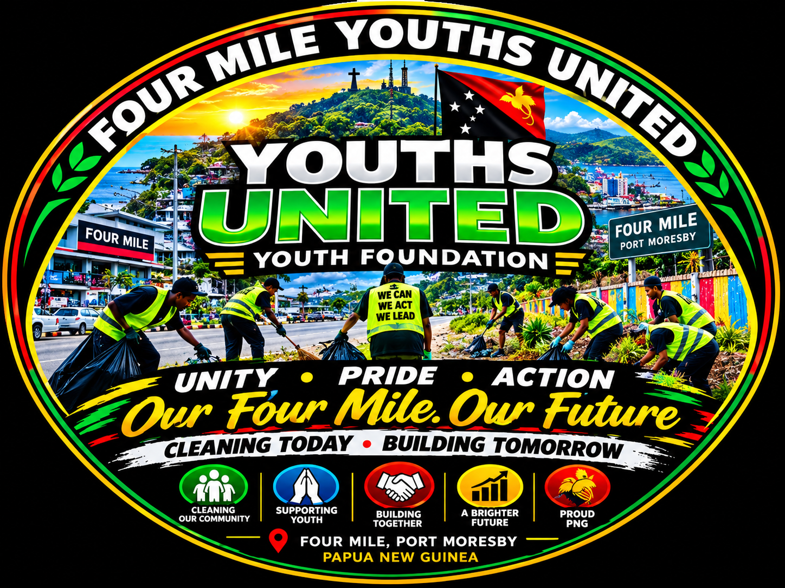

🧹
Community Cleanliness
Organize and support volunteer clean-ups of streets, public areas, drains and shared community spaces, with safe waste handling and appropriate disposal.

Uniting young people to take practical action for a cleaner environment, a safer community and a stronger future for Four Mile and the National Capital District.
Four Mile Youths United – Youth Foundation is an urban-based youth foundation established by young people living in Four Mile, National Capital District, Port Moresby, Papua New Guinea.
Our foundation is built on a simple belief: young people can become part of the solution when they are united, organized and given opportunities to contribute.
Four Mile is our home. We believe young people have an important responsibility to help build a cleaner, safer, more peaceful and cooperative environment. We bring young people together regardless of background or individual differences, encouraging volunteer service, community awareness, leadership, sports and skills development.
We aim to become a reliable community partner for government agencies, NGOs, churches, businesses, schools and other organizations delivering youth and community programs in Four Mile and NCD.
We believe development happens when people work together, take pride in their community and turn good intentions into action.
Our message: Our Four Mile. Our Future.
Community-led activities that encourage responsibility, participation and positive change across Four Mile and NCD.
Organize and support volunteer clean-ups of streets, public areas, drains and shared community spaces, with safe waste handling and appropriate disposal.
Support community awareness, cooperation and reporting of safety concerns through appropriate authorities. Our community activities do not replace police or licensed security services.
Create positive opportunities for young people to contribute their time, learn teamwork and take responsibility for their neighbourhood.
Encourage constructive messages and community education on cleanliness, respect, responsibility and working together.
Support activities that help young people develop leadership, practical skills, confidence, teamwork and healthy community connections.
Work toward partnerships with public agencies, businesses, churches, NGOs, schools and community stakeholders on suitable local initiatives.
We are building our community activity record one step at a time. We do not claim completed projects that have not yet taken place.
Four Mile Youths United – Youth Foundation is seeking an opportunity to work with a suitable partner on a first community project. We welcome discussions about clearly defined work, agreed timelines, safety requirements and realistic expectations.
We will add genuine activity photos and project updates as our work begins. Until then, this website explains our purpose, planned service areas and how potential partners can contact us.
To build a clean, safe, united and empowered Four Mile where young people are active leaders and positive contributors to their community and Papua New Guinea.
To unite, empower and mobilize young people in Four Mile to participate in community development through volunteering, environmental protection, youth awareness, leadership, sports, skills development and partnerships.
To provide young people with a positive platform to work together, develop their abilities and contribute to community development, while encouraging responsible citizenship and mutual support.
We welcome enquiries from businesses, residents, institutions and organizations seeking to discuss suitable community cleaning, public-area maintenance, youth engagement or awareness projects within the National Capital District.
Tell us about the location, work required, expected timing and how to contact you. We can discuss the project and its requirements before any work is agreed.
Do you want to volunteer, suggest a community activity, partner with the foundation or discuss a project? Contact us and tell us how you would like to contribute.
For community project enquiries, partnerships, volunteering and small-contract discussions within NCD.
Postal address:
P.O. Box 130, Boroko, NCD
Papua New Guinea
Foundation email:
fourmileyouthsunited@gmail.com
Mobile:
+675 81540660
WhatsApp:
7749 4506 – Message us
Additional email:
bobbydorpar19@gmail.com
Service area: Four Mile and the National Capital District (NCD), Papua New Guinea.